9 Two Variables
9.1 2 Categorical Variables
This is a variation on visualizations for one categorical variable, just adding a second variable to the x-axis with an aesthetic mapping. This should look familar from last week.

All you do here is add the fill= mapping aesthetic and set it equal to species (the other categorical variable in the data), while island is the x value.
Unfortunately, these graphs are kind of hard to interpret because of the stacking. In the additional aesthetics section below, we’ll learn about some arguments that make it easier to make readable stacked graphs (specifically the idea of positions and dodging).
9.2 2 Continuous Variables
When exploring the relationship between two continuous variables, there are two main visualizations you can work with: scatter plots and 2d histograms. Which one you pick will be the size of the dataset you are trying to visualize.
9.2.1 Scatter plot
As you will recall from previous lessons, you use geom_point() to create scatter plots. In a scatter plot, each point on the visualization represents an observation in your data.
penguins %>%
ggplot(aes(y = body_mass_g, x = bill_depth_mm)) +
geom_point()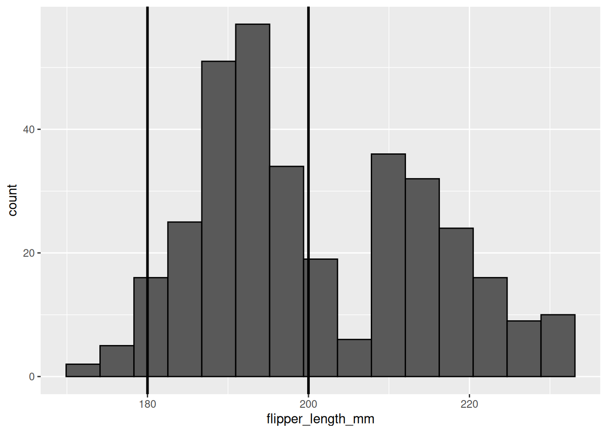
It can sometimes be a good idea to include a line of best fit to show the trend of your data. This can aid in seeing patterns in your data. As we discussed, you can do this with geom_smooth().
(Recall that the two main arguments of relevance for now are method= and se=. The method= argument gets set to “lm”, saying you want to fit a line from the linear model. se= refers to whether or not to show the Standard Error of the line.)
penguins %>%
ggplot(aes(y = body_mass_g, x = bill_depth_mm)) +
geom_point() +
geom_smooth(method = 'lm', se = FALSE)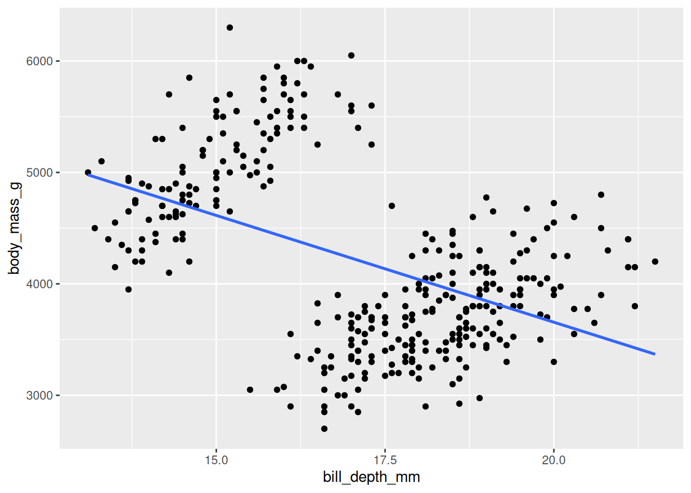
Well… Hang on. This… okay yes it IS a line, but this may not be what you were expecting to see. This highlights an important point: Just because you CAN fit a line to something does not always mean you should.
Use scatter plots for datasets with lower numbers of observations only. Even with some alpha adjustments, datasets with large n’s (number of observations) can look pretty gnarly:
diamonds %>%
ggplot(aes(y = table, x = depth)) +
geom_point(alpha = 0.1)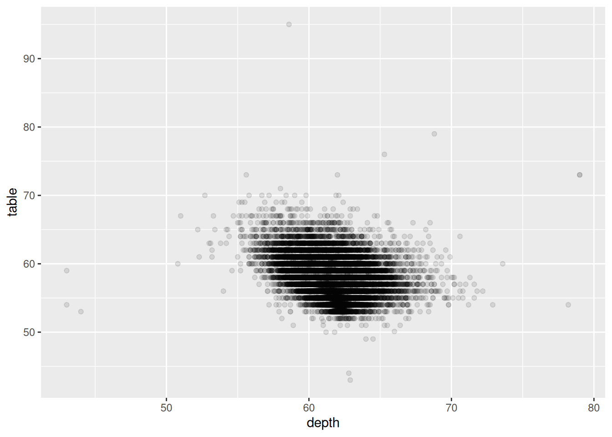
9.2.2 2d Histogram
Alternatively, when working with a dataset that has a large n, you can use a 2d histogram with geom_bin2d().
penguins %>%
ggplot(aes(y = body_mass_g, x = bill_depth_mm)) +
geom_bin2d()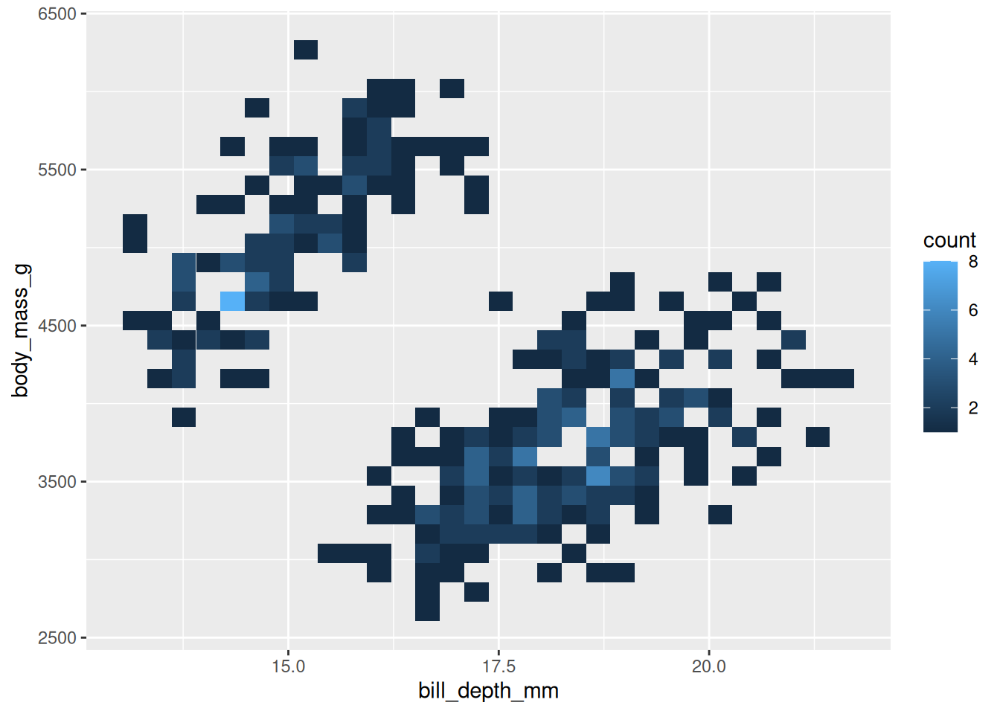
Like a scatter plot, each point represents an observation. However, the graph also shows some information about how many observations may be occupying the same/similar space. In this example, the lighter the spot, the more concentrated the observations in that spot.
9.3 1 Continuous, 1 Categorical
Arguably, the most common thing you will create a graph to visualize is a comparison of data from different conditions (categories) of some variable. Specifically, to compare values of a continuous variable between categories. For example:
How does the average weight (
body_mass_g) of the penguins compare across islands (island)?
Maybe it is the case that some islands have better food sources than others, and the penguins there can gorge themselves into a food coma all day long while the penguins on other islands go hungry.
There are a LOT of options for how to visualize comparisons of this kind. Which graph you choose depends on what information you want to convey: summary statistics (mean, median, etc.), variability (error, raw data points), or all of the above! We’ll walk through examples of each type of graph (this is a long section, but very useful!).
9.3.1 Graphing summary statistics
First, we’ll look how to graph summary statistics, specifically the mean, of a continuous variable by category. There are three different types of graphs we’ll examine: bar graphs, point graphs, and lines graphs.
9.3.1.1 Bar graph
The most common visualization for 1 continuous and 1 categorical variable is the bar chart, using geom_bar(). When we were looking at 1 categorical variable above, we didn’t need to input any arguments into this function because we were using the built-in defaults, including the desired statistic of count. Now, we want the bar to represent the mean of our y variable (body_mass_g), so we need to specify a different statistic. The mean is called “summary” for geoms, so the argument for this is stat = "summary".
Going forward, the habit of making predictions for and/or summarizing the visualizations you create will be brought back. A formal prediction (hypothesis) will first be declared by specifying two mutually exclusive alternative patterns that could be observed in the visualizations. The subsequent predictions can just refer to that initial hypothesis rather than explicitly stating it. After making the visualization, a short summary of what the visualization shows will be written.
Prediction: “If it is the case that the differences in penguin weight could be explained by what island they live on (e.g., penguins on some islands are heavier on average than penguins on other islands), then some bars should be higher or lower than the others. If it is not the case that the differences in penguin weight could be explained by what island they live on, the bars should all have roughly equivalent heights.”
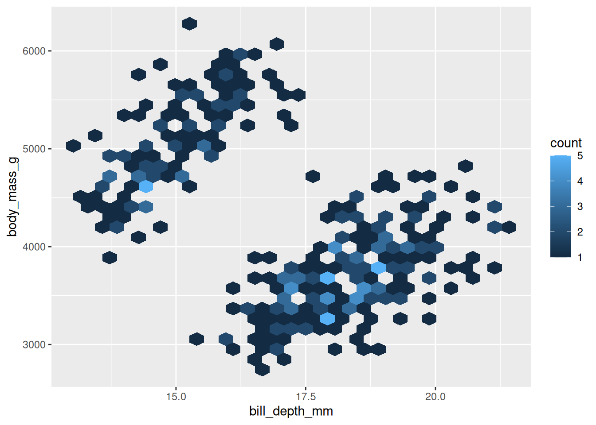
Summary: In the visualization you can see that, generally speaking, penguins on Biscoe island seem to be the heaviest and heavier on average than penguins on either Dream or Torgersen island. The penguins on Dream and Torgensen island seem to have similar weight. You can see this pattern by noticing that the bar representing Biscoe island is higher than the bars for Dream and Torgersen islands (which are both about the same height).
Because we used stat = "summary", the height of each bar here shows the mean of the continuous variable (body mass) for each category in the categorical variable (island), not counts of observations.
9.3.1.2 Point
Instead of representing the means with a bar geom, you could do the same with a “point”. This will use the geom_point() function with the stat = "summary" argument so that, instead of making a scatterplot, it will only show points for the mean body mass on each island.
penguins %>%
ggplot(aes(y = body_mass_g, x = island)) +
geom_point(stat = "summary")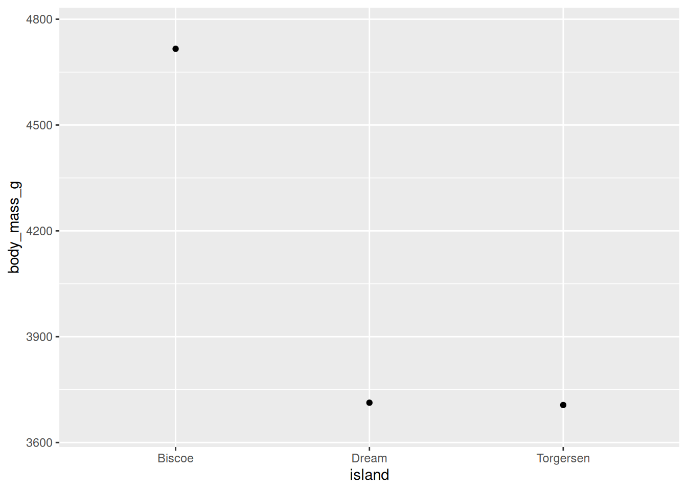
Compared to when the means were represented with bars, the difference between the average weight of penguins on Biscoe island to the other two islands looks much more drastic. Why is that? It is the same data, just visualized differently. You will note that the scale of the y-axis has changed here. Instead of running from 0 - 5000 like in the bar chart, it runs from 3750 - 4750. Modifying axis scales will be covered in a later chapter, but for now this is a reminder to be mindful of scales when making your interpretation, and how the scale might skew the interpretation someone makes from your visualization!
9.3.1.3 Line
Another way to visualize this is with a line instead of bars or points using the geom_line() function and stat = "summary" argument. However, these types of graphs are probably best for visualizing changes in a mean over time, not comparing between different groups. That’s because connecting groups with a line makes it look like there is more continuity between the groups than there actually is.
penguins %>%
ggplot(aes(y = body_mass_g, x = island)) +
geom_line(stat = "summary")
#> No summary function supplied, defaulting to `mean_se()`
#> `geom_line()`: Each group consists of only one observation.
#> ℹ Do you need to adjust the group aesthetic?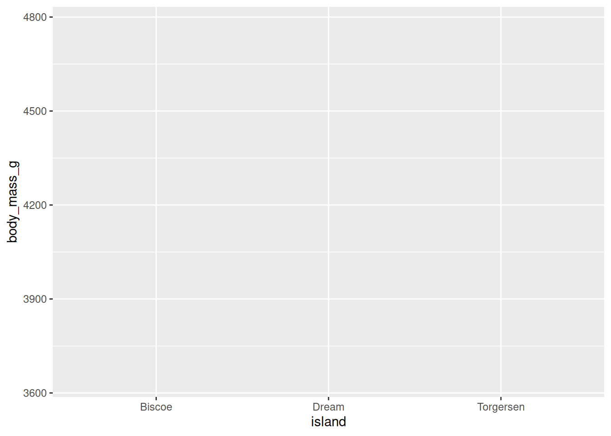
Hm, okay, this did not work. R is telling you something here though:
geom_path: Each group consists of only one observation. Do you need to adjust the group aesthetic?
In order to make a line, R needs to know which points you are trying to connect. It does not know how you want the individual pieces of the visualization (here, the mean body_mass_g for each island) grouped together, as each group only has one observation (a mean for each island). R even gave you a recommendation on how to fix this by asking if you need to adjust the group aesthetic! This is a new aesthetic that will be covered more later.
For now, R needs to know that all the categories in island should be treated as coming from the same group. This can be done by simply telling R there should be one group:

There are a number of different styles of line you can use by changing the linetype:
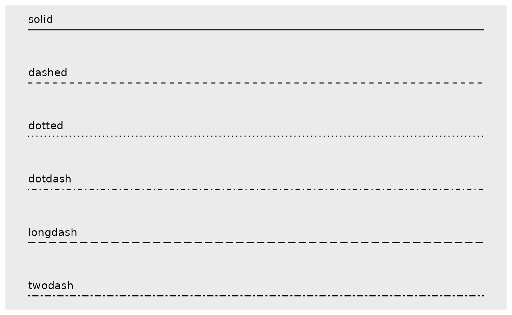
penguins %>%
ggplot(aes(y = body_mass_g, x = island, group = 1)) +
geom_line(stat = "summary", linetype = "dashed")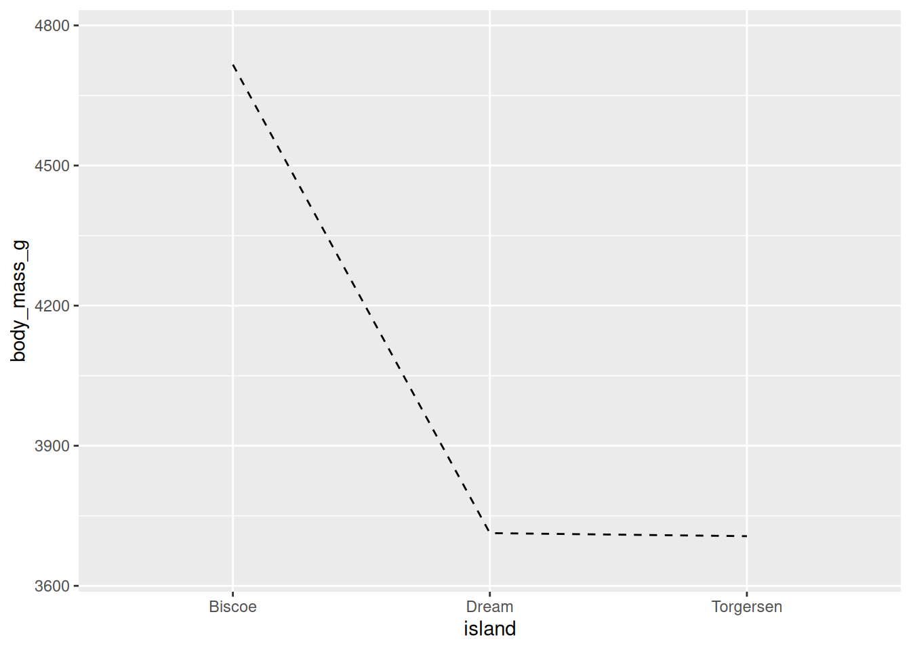
As we noted above, different geoms can also be combined in layers. For example, both geom_point() and geom_line() to make the line plot look a little cleaner.
penguins %>%
ggplot(aes(y = body_mass_g, x = island, group = 1)) +
geom_point(stat = "summary") +
geom_line(stat = "summary")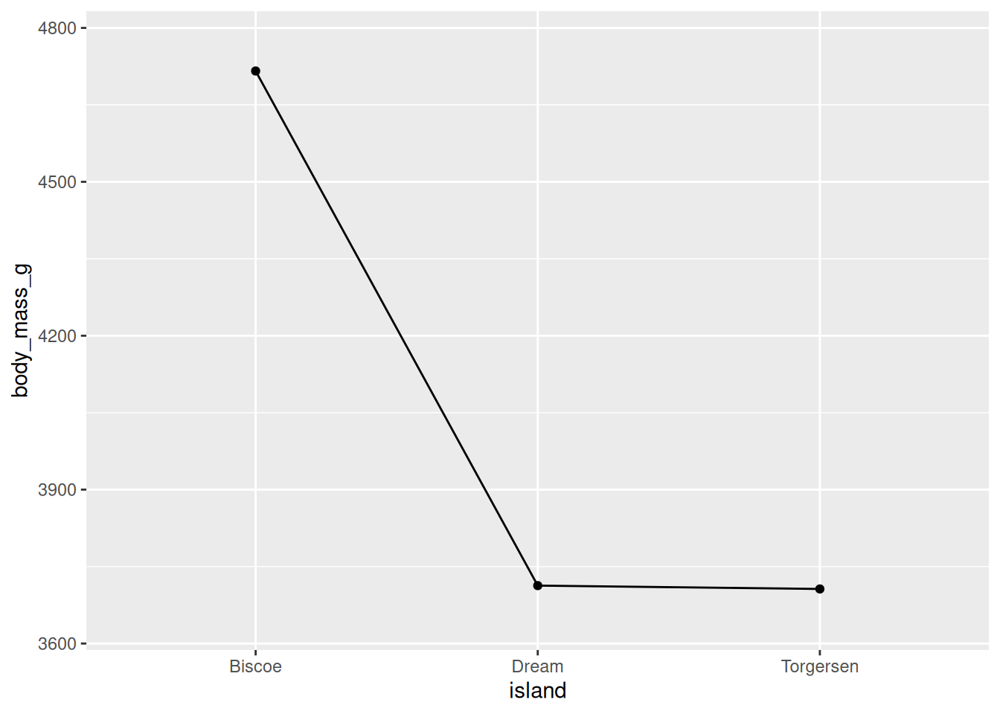
Again, a bar or point plot is better for comparing between groups. A line plot is better for comparing groups or people over time.
9.3.1.4 stat_summary()
Another way to create these graphs is using the stat_summary() function instead of different geom_ functions. stat_summary is an extremely powerful and versatile function which can be used to create a visualization summarizing the y values for each unique x value. The fun = argument specifies what type of summary statistic you want to visualize for the y values. The geom = argument specifies how you want those results to be visualized (which geom function you want to use). In short, you tell it what you want to visualize and how.
The nice thing about the stat_summary function is that you can specify other = summary statistics beyond the mean, including “median”, “max”, “min”, “sd” (standard deviation), etc., to compare several different summary statistics between the groups on your x-axis variable. It’s also easier to remember one function and then just change the arguments. Here are the same graphs we made above, using the stat_summary function instead of a geom function. To change the type of graph, we change the geom argument: “bar” for a bar graph, “point” for a point graph,and “line” for a line graph (easy peasy!).
penguins %>%
ggplot(aes(y = body_mass_g, x = island)) +
stat_summary(fun = "mean", geom = "bar")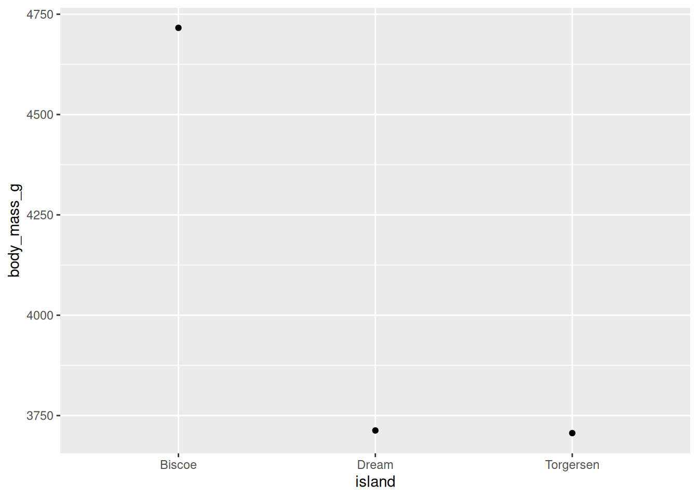
penguins %>%
ggplot(aes(y = body_mass_g, x = island)) +
stat_summary(fun = "mean", geom = "point")
penguins %>%
ggplot(aes(y = body_mass_g, x = island, group = 1)) +
stat_summary(fun = "mean", geom = "line")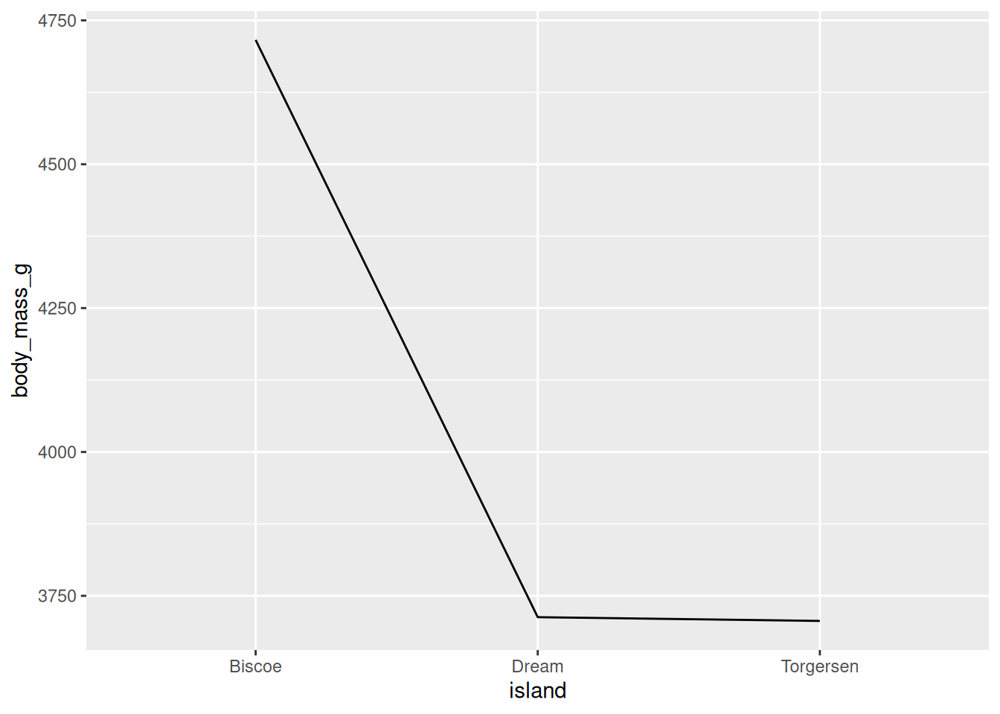
As we move on to the next section, we will keep using the stat_summary() function, but you could also use geom functions as well!
9.3.2 Graphing variability and error
In the first lesson on visualizations, you saw how many different datasets and distributions were consistent with the same summary statistics like mean and standard error (e.g., Anscombe’s quartet). This was the rationale for why visualizations are so important. However, including nothing but summary statistics in your graphs is not much better than only reporting the summary statistics as numbers!
9.3.2.1 Error bars
Although looking at the mean can be helpful, it doesn’t tell us the whole story about the data. You will most often want your graphs to also represent how much variability there is in the data (not only showing the mean). This is accomplished by including error bars (either confidence intervals (CI) or Standard Error of the Mean (SEM)) around your summary statistics. These examples and your assignments will use the SEM, but you could also use confidence intervals.
While you COULD manually compute the upper and lower values of the error bars for each mean, fortunately ggplot2 has a number of built in ways to do this for you!
One way to do this is with adding another stat_summary() function to your ggplot. Here, you want the standard error of your mean (“mean_se”), and want that represented by error bars (“errorbar”).
penguins %>%
ggplot(aes(y = body_mass_g, x = island)) +
stat_summary(fun = "mean", geom = "bar") +
stat_summary(fun.data = "mean_se", geom = "errorbar")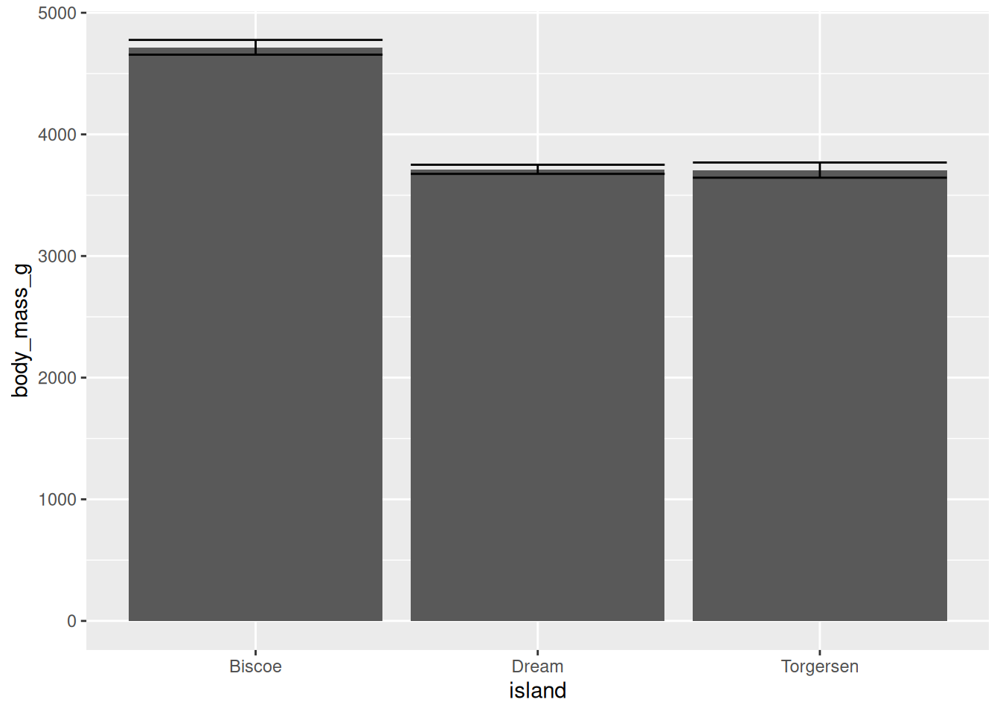
You do not have to change anything about your raw data or create new dataframes, stat_summary() will just do everything for you!
In this second function, you also have to use fun.data = instead of fun =. “mean_se” will give you values: the mean, upper, and lower SE boundaries. Since you are getting multiple pieces of information for each x-axis value, you have to use a slightly different argument.
Another thing you may note is how ugly this looks. The error bars are far too wide. You can change this with the width aesthetic.
penguins %>%
ggplot(aes(y = body_mass_g, x = island)) +
stat_summary(fun = "mean", geom = "bar") +
stat_summary(fun.data = "mean_se", geom = "errorbar",
width = 0.2)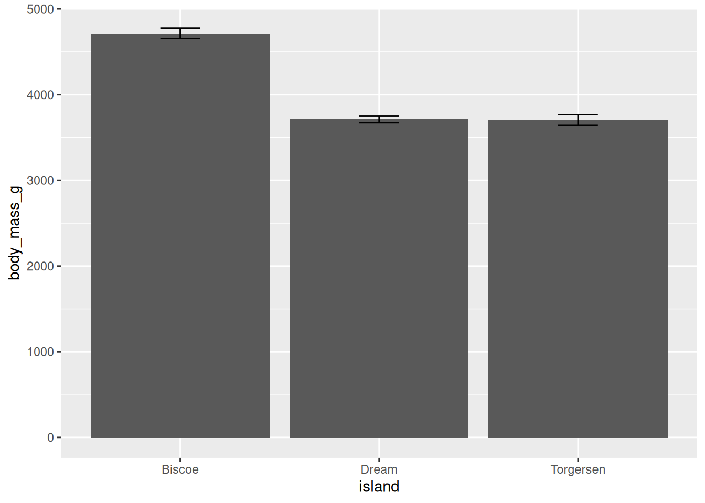
This looks a bit better, and more like what you would see in a published peer-reviewed journal article.
Error bars can be added to other geoms besides bar plots, like geom_point:
penguins %>%
ggplot(aes(y = body_mass_g, x = island)) +
stat_summary(fun = "mean", geom = "point") +
stat_summary(fun.data = "mean_se", geom = "errorbar", width = 0.2)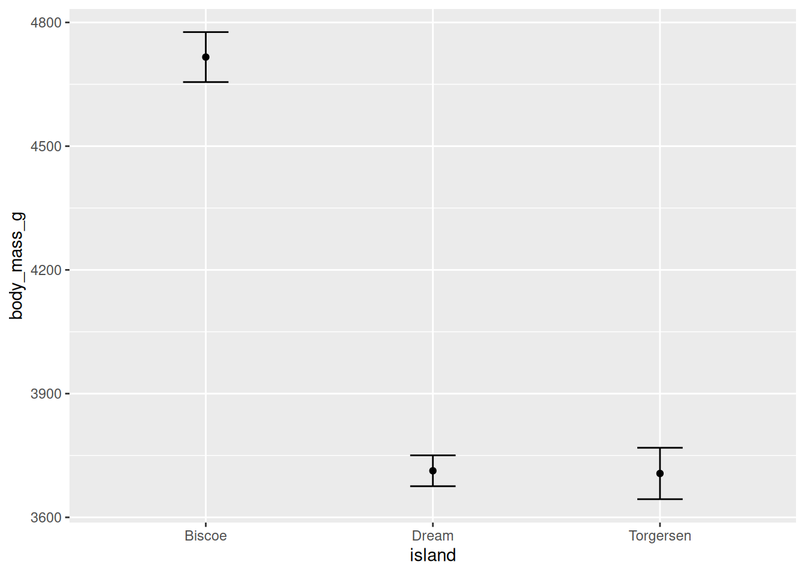
And can also be rendered with different shapes, for example a vertical line without a horizontal line on top, using the linerange input to the geom argument:
penguins %>%
ggplot(aes(y = body_mass_g, x = island)) +
stat_summary(fun = "mean", geom = "point") +
stat_summary(fun.data = "mean_se", geom = "linerange")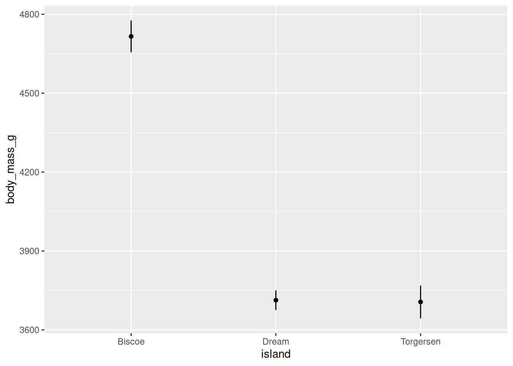
Another way to add an error bar is to combine the stat_summary() function for your mean and the one for your error bar into the same stat_summary call using the “pointrange” geom. This geom creates a point for each mean and vertical lines for the error bars:
penguins %>%
ggplot(aes(y = body_mass_g, x = island)) +
stat_summary(fun.data = "mean_se", geom = "pointrange")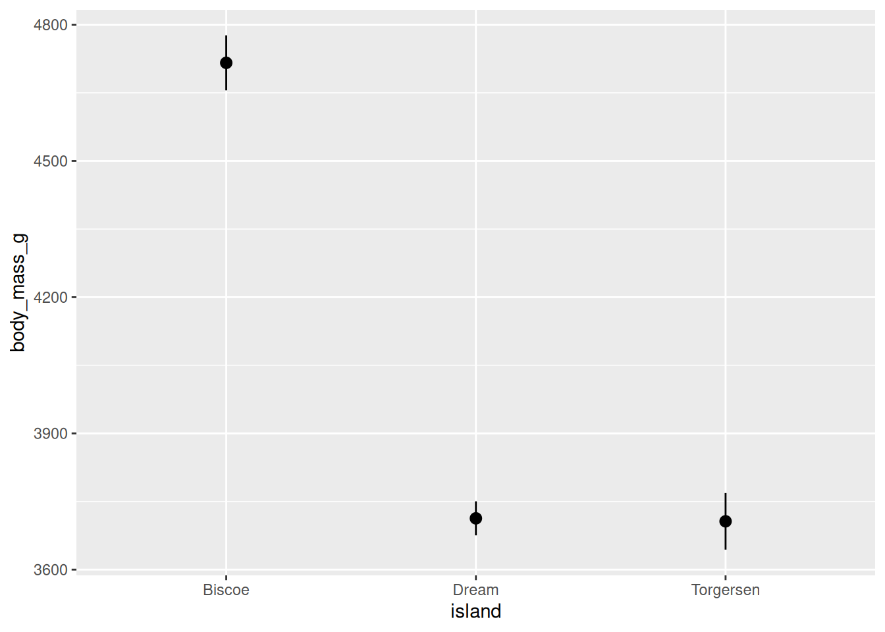
Much more elegant! The only downside here is you have slightly less control over customizing the line and point separately.
9.3.2.2 Boxplots
Another way to get a sense for the variability of the data is to use box plots. Boxplots give you additional information besides the standard error of the mean. (See the figure below to remind you what each part of a boxplot means.)

You can create a boxplot using geom_boxplot()
penguins %>%
ggplot(aes(y = body_mass_g, x = island)) +
geom_boxplot()
However, boxplots and error bars may not give you all the information you need to understand the variability in the data. While boxplots give you a better sense of a distribution by providing more information than just a bar for the mean and SEM does, many datasets can be consistent with the same boxplot too!
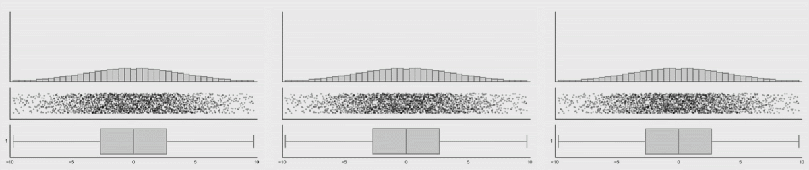
Source: Same Stats, Different Graphs…
You never know what your summary statistics could be hiding about your data:
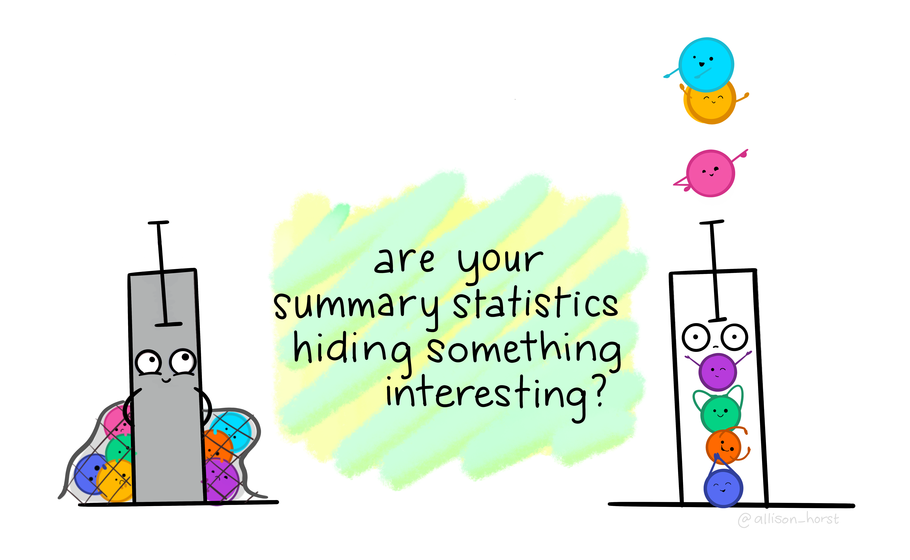
Artwork by Horst (2022)
While bar charts with error bars and boxplots are conventionally the most common way to represent your data, you have just seen how problematic this can be. It is always recommended to visualize the distribution of your data using a histogram or density plot! This is the only way to be transparent and accurately communicate the patterns in your data. For this reason, it is strongly advised to not use bar graphs to represent means.
The graphs outlined below will help you achieve the goals of both visualizing summary statistics AND the raw distributions of individual observations in your dataset.
9.3.2.3 Violin Plots
If your dataset is large and/or you are creating a visualization with a lot of observations, violin plots can be helpful. They are similar to boxplots but show a little less information and are more sensitive to changes in a distribution of raw data. (Called a violin plot because, with the right distribution, they kind of look like a violin!)

Source: Same Stats, Different Graphs…
You can create a violin plot with geom_violin()
penguins %>%
ggplot(aes(y = body_mass_g, x = island)) +
geom_violin()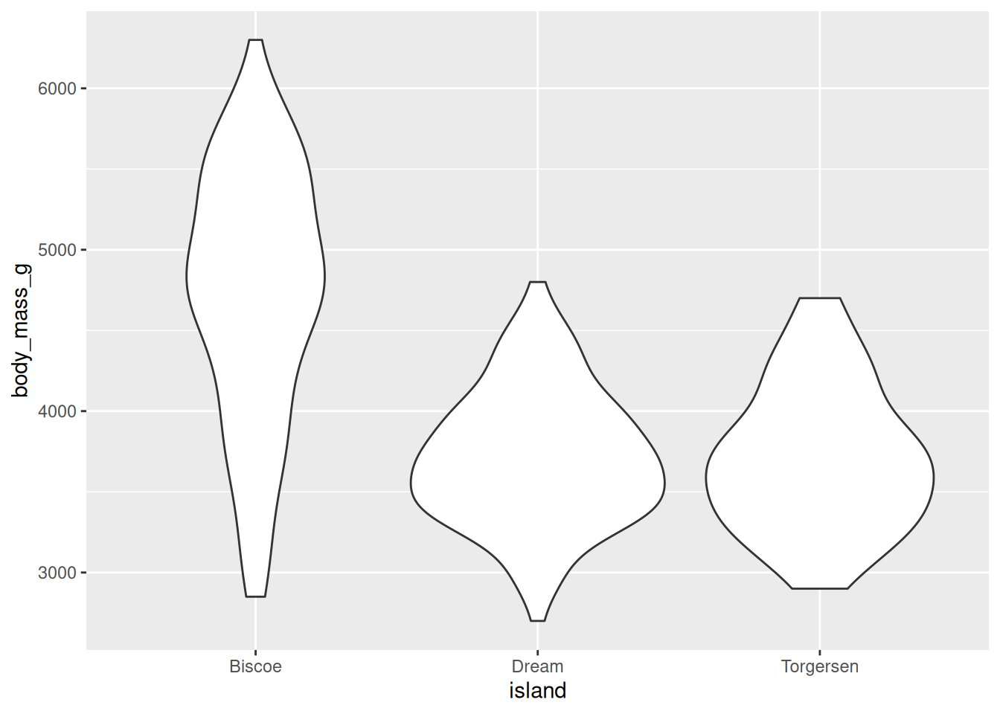
The width of a section of the violin plot corresponds to the number of observations in that area. Violin plots can also pair nicely with a boxplot!
penguins %>%
ggplot(aes(y = body_mass_g, x = island)) +
geom_violin() +
geom_boxplot(width = 0.2)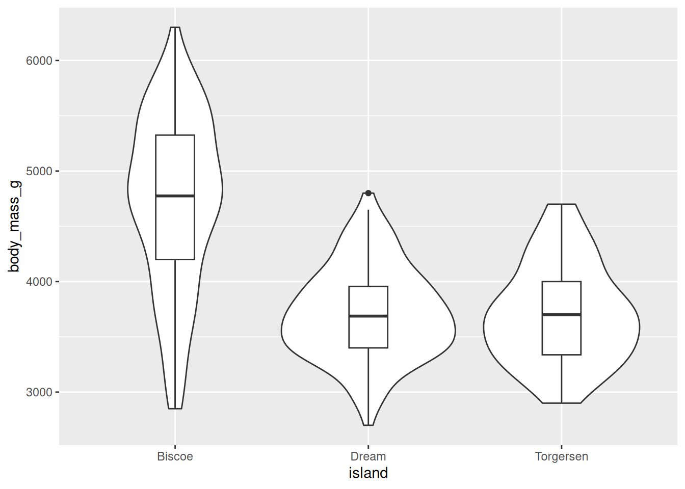
This way, you get all the benefits of a boxplot but are also conveying more information about the underlying distribution. Since ggplot is an additive/layered system, you can combine different geoms and elements to make particularly effective visualizations!
9.3.2.4 Jitter Plots
If you wanted to actually show the full distribution of your data, you might think to use geom_point() like you did to create a scatter plot. However, since the x-axis is a categorical variable, all the data points will have the same value:
penguins %>%
ggplot(aes(y = body_mass_g, x = island)) +
geom_point()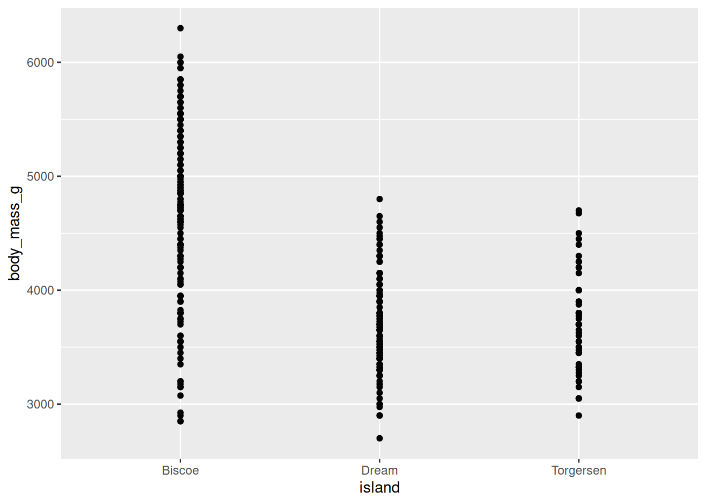
You can add some noise (space) to your data by using geom_jitter() and jitter your data points. Jitter plots are especially good for variables with small n’s. They can start to be a little messy and difficult to read with larger n’s though.
penguins %>%
ggplot(aes(y = body_mass_g, x = island)) +
geom_jitter()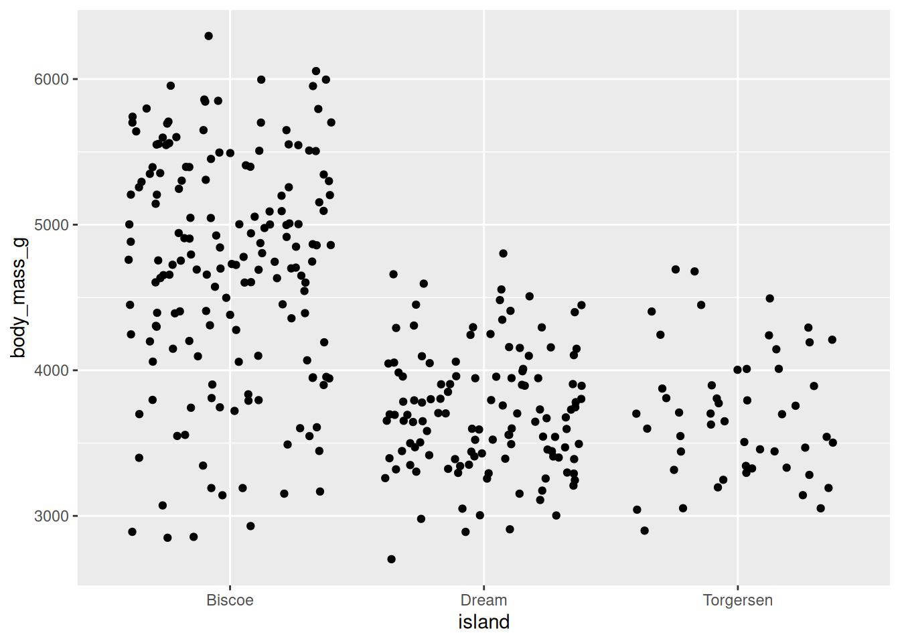
When your dataset is not too large, jitter plots can be paired with a number of other geoms and summary statistics to create very effective visualizations. Consider the examples below:
Combine jitter with the mean and SE:
penguins %>%
ggplot(aes(y = body_mass_g, x = island)) +
geom_jitter(height = 0, width = 0.2,
size = 1, alpha = 0.5,
color = "darkgreen") +
stat_summary(fun.data = "mean_se",
geom = "pointrange",
color = "black",
fill = "red",
shape = 21,
size = 0.5)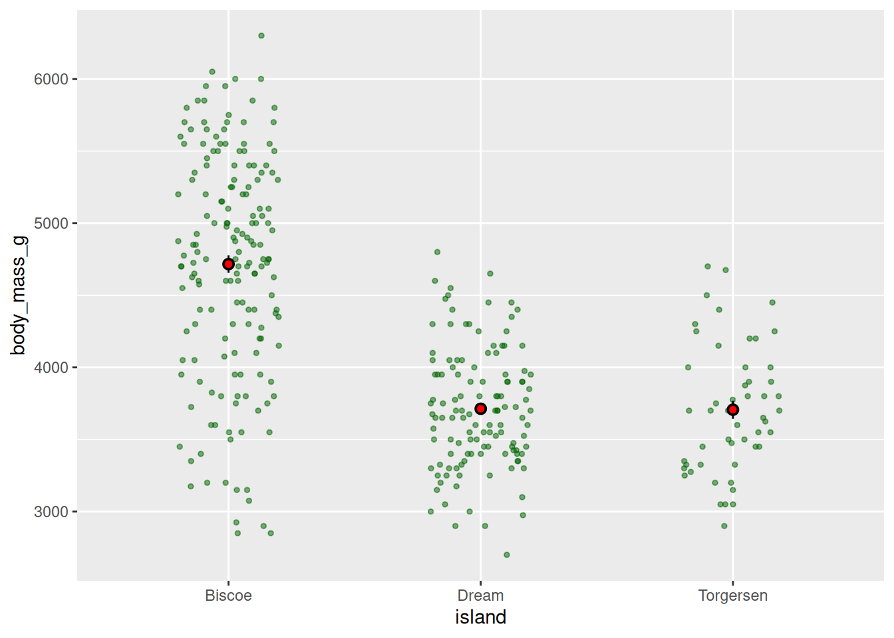
penguins %>%
ggplot(aes(y = body_mass_g, x = island)) +
geom_jitter(alpha = 0.4, height = 0, width = 0.2, size = 1) +
stat_summary(fun.data = "mean_se",
geom = "errorbar",
color = "orange",
width = 0.1,
size = 1) +
stat_summary(fun = "mean",
geom = "point",
color = "red",
size = 2)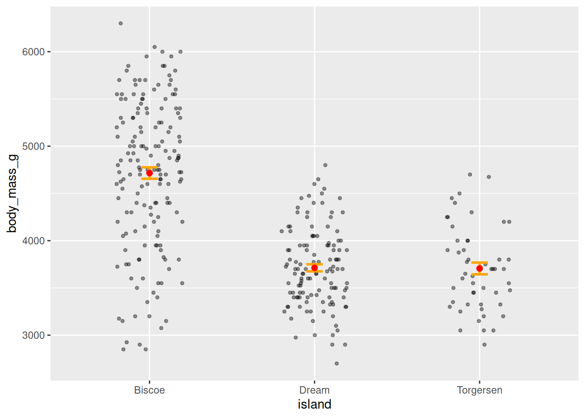
Combine jitter and boxplots:
penguins %>%
ggplot(aes(y = body_mass_g, x = island)) +
geom_boxplot(width = 0.6) +
geom_jitter(height = 0, width = 0.1,
alpha = 0.5, color = "seagreen")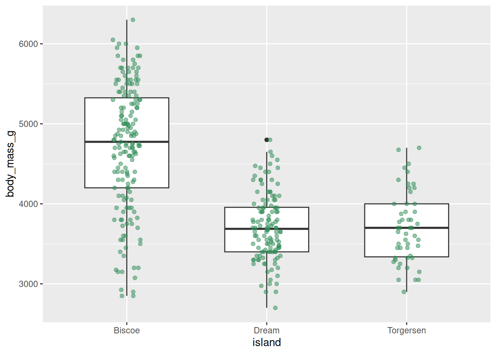
Or jitter and violin plots:
penguins %>%
ggplot(aes(y = body_mass_g, x = island)) +
geom_violin() +
geom_jitter(alpha = 0.4, width = 0.05) +
stat_summary(fun = "mean",
geom = "point",
color = "red")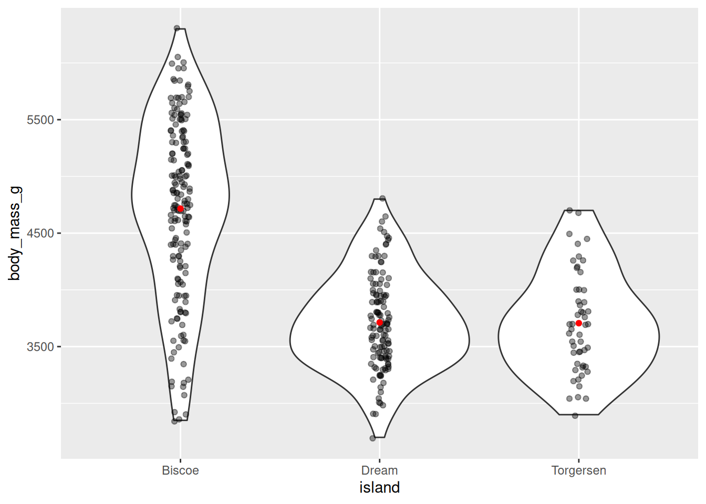
9.3.2.4.1 Limits of Jittering
There are 3 very important things to be mindful of when creating a jitter plot.
- By adding noise, you can quite literally change the data being visualized. This is not a problem for a categorical variable, like you have here on the x-axis, because small shifts in position will not change the value associated with the point. On continuous variables, like you have on the y-axis, this will. For this reason, it is recommended to only jitter along a categorical variable. Since your y-axis here is continuous, you do not want the height of the points to change. You can tell ggplot not to do this with the
heightargument. This will preserve the actual y-axis value, so your visualization will represent the true values in your dataset.
penguins %>%
ggplot(aes(y = body_mass_g, x = island)) +
geom_jitter(height = 0)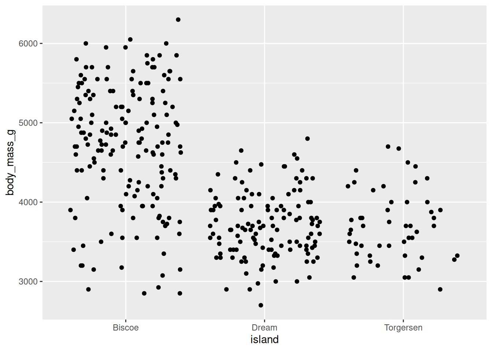
The jitter added to a visualization is random. Every time you make a jitter plot, or even rerun the code for the same jitter plot, the jitter that is added is random and the visualization will look slightly different!
When running code to generate a jitter plot, sometimes your code may work and produce a graph that seems normal but be accompanied by some text output in the console:
Warning messages: 1: Removed X rows containing non-finite values (stat_smooth). 2: Removed X rows containing missing values (geom_point).
It is CRITICALLY important to be mindful of these types of errors. What is happening there is that your visualization is not actually showing all your data! That message means that X data points are being removed from the dataset when generating the graph. This can be particularly problematic when you are visualizing summary statistics, like means and error bars, because they would not be reflecting the true values of your dataset!!!
The most common reason for receiving this error is that there are some data points with values not captured by your axes limits. This can either be because you have manually limited the axis to not contain a known value, or because a value has been jittered past the axis limit. More on both of these later, but for now the take home point is to look always check your code for warning/error messages (in general, but especially when jittering).